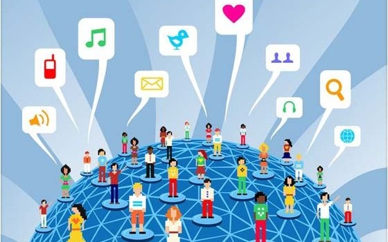

Introducción
Las tecnologías web han transformado radicalmente la forma en que vivimos, trabajamos y nos relacionamos. Desde la explosión de la World Wide Web en la década de 1990, estas herramientas digitales han ejercido un impacto omnipresente en la sociedad y los negocios, alterando profundamente la dinámica socioeconómica global. En la esfera social, las tecnologías web han revolucionado la comunicación, permitiendo conexiones instantáneas y globales a través de redes sociales, correos electrónicos, y plataformas de mensajería. La información ahora fluye libremente, transformando la manera en que nos informamos, educamos y nos entretenemos. En el ámbito empresarial, estas tecnologías han desencadenado una era de innovación disruptiva, habilitando nuevos modelos de negocio, aumentando la eficiencia operativa y ampliando los mercados potenciales. Desde el comercio electrónico hasta el marketing digital y la gestión de la cadena de suministro, las herramientas web han redefinido las estrategias empresariales y la experiencia del cliente. Sin embargo, este impacto también plantea desafíos significativos, como la privacidad de los datos, la seguridad cibernética y la brecha digital. En este contexto, comprender y adaptarse a las tecnologías web se vuelve fundamental para aprovechar sus beneficios y mitigar sus riesgos en la sociedad y los negocios modernos.

Impacto en la Sociedad
Las tecnologías web han tenido un impacto profundo y multifacético en la sociedad. Aquí hay algunos aspectos destacados:
Conectividad global: Las tecnologías web han democratizado el acceso a la información y han conectado a personas de todo el mundo. Esto ha facilitado la comunicación instantánea, el intercambio de ideas y la colaboración en una escala sin precedentes.
Cambio en la forma de comunicarse: Plataformas como redes sociales, blogs y foros han alterado la forma en que nos comunicamos, permitiendo a las personas compartir opiniones, noticias e información de manera rápida y accesible.
Acceso a la educación y el conocimiento: La web ha abierto las puertas a la educación en línea, brindando acceso a recursos educativos y cursos de capacitación a personas de todas partes, independientemente de su ubicación geográfica o situación económica.
Transformación del mercado laboral: Las tecnologías web han creado nuevas oportunidades de empleo en campos como el desarrollo de software, el marketing digital, el diseño web y la gestión de redes sociales.Al mismo tiempo, han cambiado la naturaleza del trabajo, permitiendo cada vez más el teletrabajo y la colaboración remota.
Impacto en la cultura y el entretenimiento: La web ha transformado la forma en que consumimos medios y entretenimiento, ofreciendo acceso a una amplia gama de contenido, desde películas y música hasta libros y juegos, de forma instantánea y a menudo gratuita o a bajo costo.
En resumen, las tecnologías web han influido en prácticamente todos los aspectos de la sociedad moderna, desde la forma en que nos comunicamos y trabajamos hasta cómo accedemos a la información y nos entretenemos. Su impacto seguirá siendo fundamental a medida que la tecnología continúe evolucionando y dando forma al mundo en el que vivimos.
Como en todo aspecto se puede encontrar cosas buenas y cosas malas, como se aboró la tecnología nos ha brindado cosas muy positivas, pero también debemos enfocarnos en aspectos negativos.
A continuación presentamos un apartado para comentar acerca de lo negativo de las Tecnologías Web.
Más información sobre pérdida de valores
Impacto en los Negocios
Las tecnologías web han revolucionado la forma en que se conducen los negocios en todo el mundo. Aquí hay algunas formas clave en que han impactado el ámbito empresarial: Globalización de los mercados: Las tecnologías web han derribado las barreras geográficas, permitiendo que las empresas alcancen a clientes en todo el mundo a través de plataformas de comercio electrónico, marketing digital y publicidad en línea.
Eficiencia operativa: Herramientas web como software de gestión empresarial, plataformas de colaboración en línea y sistemas de gestión de la cadena de suministro han optimizado los procesos comerciales, reduciendo costos, mejorando la productividad y aumentando la eficiencia.
Interacción con el cliente: Las redes sociales, los sitios web interactivos y los servicios de atención al cliente en línea han transformado la forma en que las empresas interactúan con sus clientes, permitiendo una comunicación más directa, personalizada y rápida.
Nuevos modelos de negocio: Las tecnologías web han dado lugar a una proliferación de nuevos modelos de negocio, como el comercio electrónico, los servicios basados en suscripción, los mercados en línea y la economía colaborativa, creando oportunidades para la innovación y la diversificación.
Analítica de datos: Las herramientas web de análisis de datos y la inteligencia artificial han permitido a las empresas recopilar, analizar y utilizar grandes volúmenes de datos para tomar decisiones más informadas, predecir tendencias del mercado y personalizar la experiencia del cliente.
Competencia y disrupción: La rápida evolución de las tecnologías web ha intensificado la competencia en todos los sectores, obligando a las empresas a adaptarse constantemente y a innovar para mantenerse relevantes en un entorno empresarial en constante cambio.
A continuación se puede encontrar un ejemplo de como el avance de las Tecnologías Web han permitido de que se pueda comprar desde la comodidad de su hogar
Web: Empresa de comercio